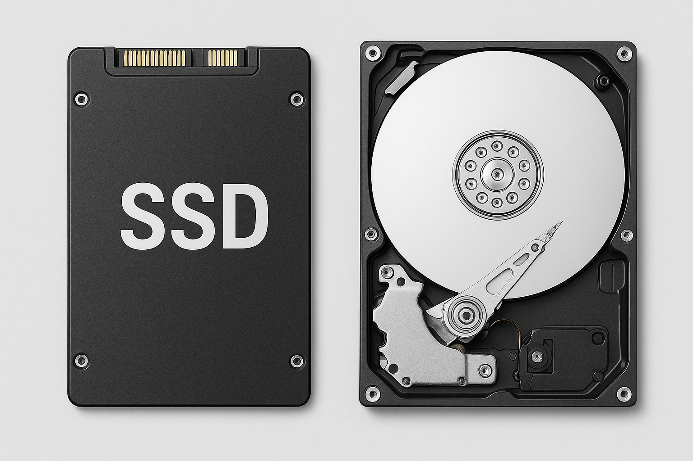

An SSD, or solid-state drive, is a type of storage device used in computers. This non-volatile storage media stores persistent data on solid-state flash memory. SSDs replace traditional hard disk drives (HDDs) in computers and perform the same basic functions as a hard drive. But SSDs are significantly faster in comparison. With an SSD, the device's operating system will boot up more rapidly, programs will load quicker and files can be saved faster.
A traditional hard drive consists of a spinning disk with a read/write head on a mechanical arm called an actuator. An HDD reads and writes data magnetically. The magnetic properties, however, can lead to mechanical breakdowns.
By comparison, an SSD has no moving parts to break or spin up or down. The two key components in an SSD are the flash controller and NAND flash memory chips. This configuration is optimized to deliver high read/write performance for sequential and random data requests.

SSDs are used anywhere that hard drives can be deployed. In consumer products, for example, they are used in personal computers (PCs), laptops, computer games, digital cameras, digital music players, smartphones, tablets and thumb drives. They are also incorporated with graphics cards. However, they are more expensive than traditional HDDs.
Businesses with a rapidly expanding need for higher input/output (I/O) have fueled the development and adoption of SSDs. Because SSDs offer lower latency than HDDs, they can efficiently handle both heavy read and random workloads. That lower latency stems from the ability of a flash SSD to read data directly and immediately from stored data.
High-performance servers, laptops, desktops or any application that needs to deliver information in real-time can benefit from solid-state drive technology. Those characteristics make enterprise SSDs suitable to offload reads from transaction-heavy databases. They can also help to alleviate boot storms with virtual desktop infrastructure, or inside a storage array to store frequently used data locally using a hybrid cloud.
Systems such as high-performance servers, laptops, and desktops — or any environment requiring real-time data delivery — gain substantial advantages from SSD technology. These drives enable enterprise systems to reduce read loads on busy databases and improve performance during intense startup activity in virtual desktop infrastructures. In addition, SSDs are often used within storage arrays to keep frequently accessed data close to processing units, particularly in hybrid cloud setups.
An SSD reads and writes data to underlying interconnected flash memory chips made out of silicon. Manufacturers build SSDs by stacking chips in a grid to achieve different densities.
SSDs read and write data to an underlying set of interconnected flash memory chips. These chips use floating gate transistors (FGTs) to hold an electrical charge, which enables the SSD to store data even when it is not connected to a power source. Each FGT contains a single bit of data, designated either as a 1 for a charged cell or a 0 if the cell has no electrical charge.
Every block of data is accessible at a consistent speed. However, SSDs can only write to empty blocks. And although SSDs have tools to get around this, performance may still slow over time.
SSDs use three main types of memory: single-, multi- and triple-level cells. Single-level cells can hold one bit of data at a time -- a one or zero. Single-level cells (SLCs) are the most expensive form of SSD, but are also the fastest and most durable. Multi-level cells (MLCs) can hold two bits of data per cell and have a larger amount of storage space in the same amount of physical space as a SLC. However, MLCs have slower write speeds. Triple-level cells (TLCs) can hold three bits of data in a cell. Although TLCs are cheaper, they also have slower write speeds and are less durable than other memory types. TLC-based SSDs deliver more flash capacity and are less expensive than an MLC or SLC, albeit with a higher likelihood for bit rot due to having eight states within the cell.
